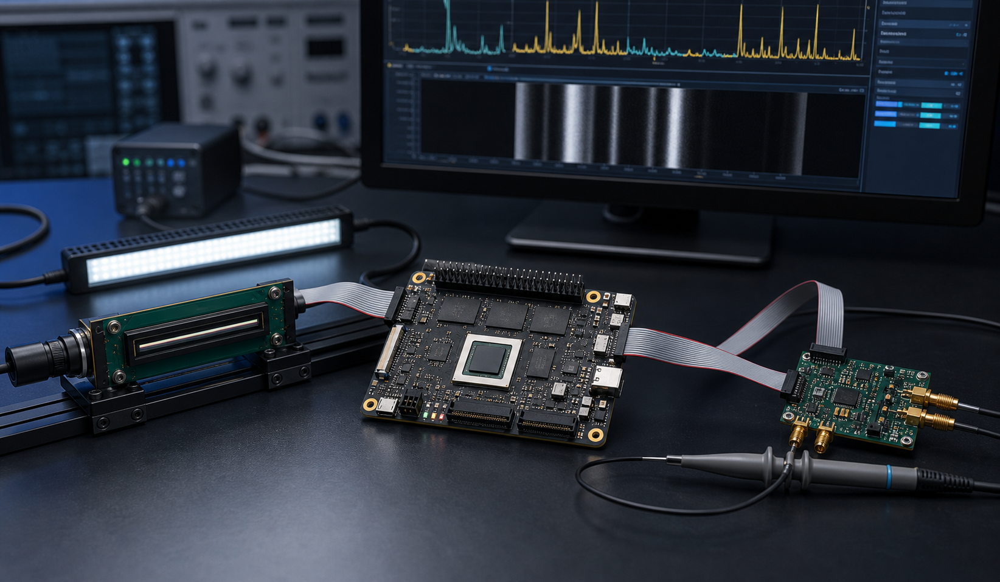

FPGA 전환을 시작하는 개발팀
MCU/CPU 중심 개발에서 FPGA/Zynq 역할 분리가 필요한 팀.
FPGA/Zynq 실무 교육 · 교육/컨설팅 상세 페이지
Vivado, Vitis, Zynq PS/PL, AXI-Lite, custom IP, host tool, sensor PoC를 고객 보드와 제품 과제에 맞춰 교육하고 컨설팅합니다. 단순 강의가 아니라 임베디드 시스템 설계부터 제품화까지 이어지는 실습 산출물을 남깁니다.

Training Map
공개 강의식 커리큘럼보다 현재 보드, 센서, 개발 환경, 막힌 지점을 먼저 확인하고 필요한 실습 순서와 컨설팅 범위를 정합니다.
Who It Helps
MCU/CPU 중심 개발에서 FPGA/Zynq 역할 분리가 필요한 팀.
power, clock/reset, JTAG, boot, register access를 체계적으로 확인해야 하는 팀.
camera, CIS, TDC, ultrasonic 입력을 data path와 host log로 연결해야 하는 팀.
Curriculum Blocks
교육/컨설팅은 필요한 블록만 조합합니다. 기본 이론, tool 사용법, RTL, firmware, Python host tool, 검증 로그까지 한 흐름으로 연결합니다.
Deliverables
| 산출물 | 내용 | 활용 |
|---|---|---|
| Training Deck | 고객 보드와 과제에 맞춘 FPGA/Zynq 실무 교육 자료 | 신규 팀원 온보딩과 내부 공유 |
| Lab Project | Vivado/Vitis project, custom IP, firmware skeleton | 다음 개발의 시작점 |
| Architecture Diagram | sensor, ZM4 FPGA SoM, register, firmware, host tool 연결 구조 | 내부 보고와 개발 범위 산정 |
| Bring-up Checklist | power, clock/reset, boot, JTAG, register, first data 확인 순서 | 재현 가능한 검증 절차 |
| Next Scope | PoC 확장, custom carrier, firmware, test fixture 개발 범위 | 제품화 판단과 양산 적용 검토 |
Education Contact
사용 중인 보드, FPGA/Zynq 경험 수준, 센서 또는 제품 과제, 원하는 산출물을 보내주시면 교육/컨설팅 범위를 정리해 드립니다.